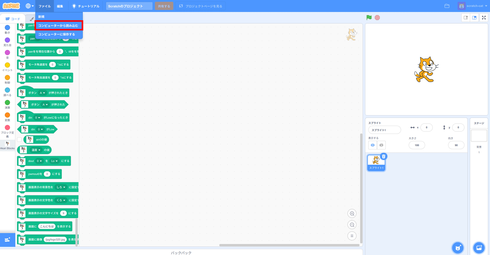
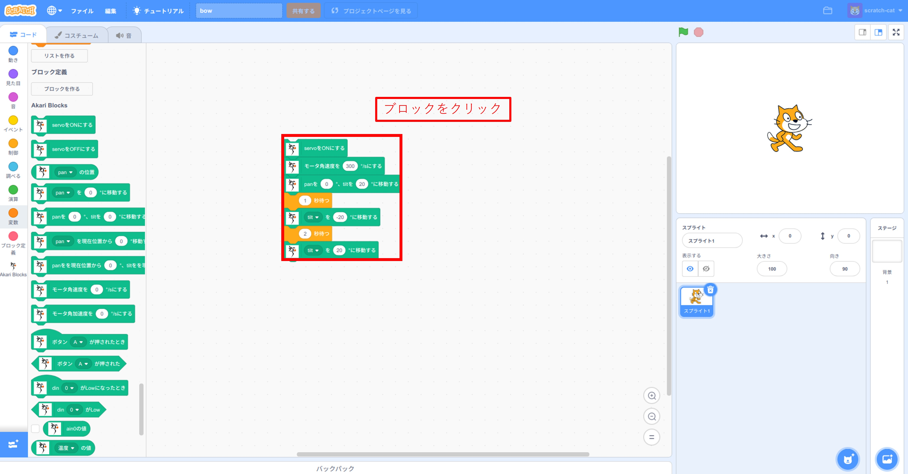

Scratchで動かしてみよう
ここでは、Scratchを起動してAKARIを動かす方法を説明します。
Scratchの起動
AKARIのScratch環境をセットアップしよう の準備が終わったら、scratchを起動します。
akari_scratchのdockerを起動する。
akari_scratch/docker 内で下記コマンドを実行し、akari_scratchを起動します。docker compose -f docker-compose.yml upakari_scratchのcompileが始まるので、Compiled successfullyの表示になるまでしばらく待ちます。
(別PCからアクセスする場合)AKARIが接続されているネットワークと同一のネットワークにPCを接続する。
ブラウザからscratchにアクセスする。
webコンソールを使ってみよう と同様の方法でAKARIのIPアドレスを調べ、webブラウザのwebアドレス欄に [AKARIのIPアドレス]:8601 を入力してアクセスします。AKARI本体から直接アクセスしている場合は、 localhost:8601 でもアクセスできます。
scratchが起動する。
AKARIの動かし方
AKARIを動かすためには、専用の拡張機能をインポートする必要があります。
Scratchの画面左下の拡張機能ボタンを押す。
{kind=link}
拡張機能画面を下にスクロールして、AkariBlocksを選択する。
{kind=link}
TOP画面でAkariBlocksのブロックが使えるようになる。
同様に拡張機能画面を再度開き、AkariCameraの拡張機能を選択する。
{kind=link}
AkariCameraのブロックが使えるようになる。
サンプルアプリを動かしてみよう
まずはサンプルアプリを動かしてみましょう。
Scratchを使っているPCにサンプルアプリをダウンロードする。
サンプルアプリはScratchを開いているPC側から開く必要があります。サンプルアプリは akari_scratch/sample に含まれているため、AKARI本体ではなく外部のPCからScratchを起動している場合はそちらのPCにもダウンロードし直す必要があります。外部のPC上でakari_scratchをcloneするか、akari_scratch/sample からファイルを直接ダウンロードします。今回は bow.sb3 をダウンロードしましょう。
Scratch上でサンプルアプリを開く。
Scratch上の画面上部の「ファイル」→「コンピュータから読み込む」を選択し、先程ダウンロードした bow.sb3 を開きます。Scratch画面中央に、サンプルプログラムが表示されます。
{kind=link}
プロジェクトを実行する。
Scratch上のサンプルプログラムをクリックすると、動作が実行されAKARIがヘッドを上下に動かすおじぎのモーションをします。
{kind=link}
その他のサンプルアプリ
sleepy.sb3
AKARIの明るさセンサの値が一定以下になったらAKARIが寝てしまいます。
face_tracking.sb3
顔追従をするアプリです。
以上がScratchの使い方の簡単な説明となります。
次はAKARI拡張機能の各ブロックの仕様を説明します。
これらを参考に、ブロックを組み合わせてアプリを作ってみてください。